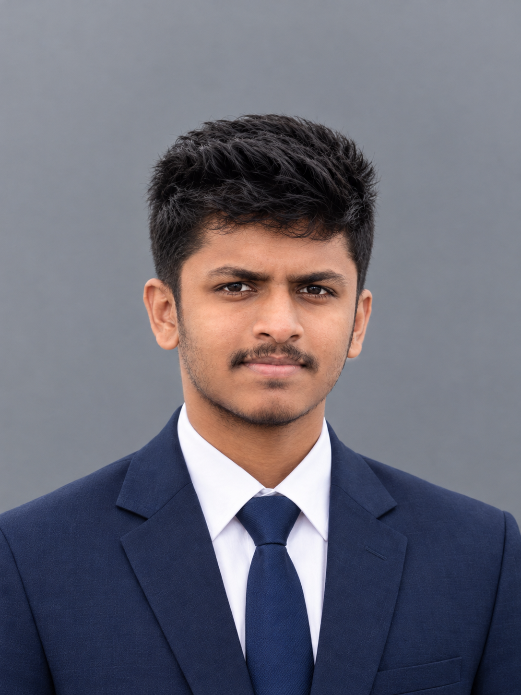

Revit models
Space for model views and screenshots when ready to share.

Civil Engineering Undergraduate · University of Peradeniya
I’m developing practical skills in engineering design and digital modelling. I’m currently learning Revit and creating 3D models from 2D floor plans, with a long-term goal of growing into structural modelling and other areas of Civil Engineering.
I am a Civil Engineering undergraduate at the University of Peradeniya, building a strong foundation in engineering while developing practical digital modelling skills.
I am currently learning Revit by converting 2D floor plans into 3D models, including architectural elements such as walls, doors, windows, stairs, floors and roofs. Over time, I hope to expand into structural modelling and other areas of Civil Engineering.
During my school years, I actively participated in leadership activities, drawing competitions, sports, and other extracurricular events, gaining valuable experience beyond the classroom. These experiences helped me develop teamwork, creativity, discipline, and confidence. I am now building on these qualities as I pursue my Civil Engineering education and develop practical digital modelling skills.

Academic and practice work
This gallery is ready for genuine Revit model views, screenshots, academic assignments and future engineering projects. No completed project or client work is claimed here.
Space for model views and screenshots when ready to share.
Space for relevant Civil Engineering coursework and assignments.
Space to document work as my skills and experience develop.
I will add original images and descriptions as the work becomes available.
Current toolkit
I’m building familiarity with these tools as part of my Civil Engineering studies.
Beginner; learning 3D architectural modelling of walls, doors, windows, stairs, floors and roofs from 2D plans.
Part of my current engineering design toolkit.
Currently learning the fundamentals.
Currently learning and building practical familiarity.
My proficiency is developing; I do not claim expert-level skills.
My intended freelance service
I’m developing a service to convert supplied 2D architectural floor plans into basic 3D Revit models. I’m a beginner, so each request would need a clear, agreed scope.
Discuss a floor planBuild a basic Revit model from a supplied architectural floor plan.
Walls, doors, windows, stairs, floors and roofs, based on the plan and agreed scope.
Provide clear views of the model for review, subject to the agreed deliverables.
This is an intended beginner-level service. I do not claim professional experience or offer structural design or engineering approval.
Curriculum vitae
Download my latest CV.
Download CVHave a plan to explore?
For questions or to discuss a 2D plan and a beginner-level Revit modelling scope, contact me here.
pasindu.chs@gmail.com